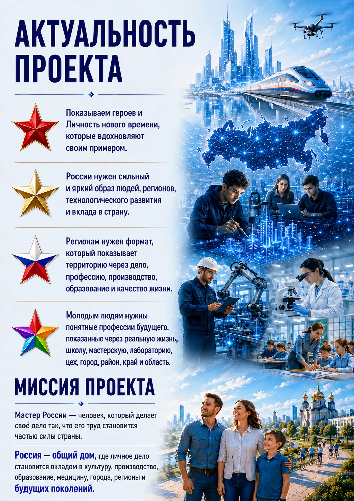
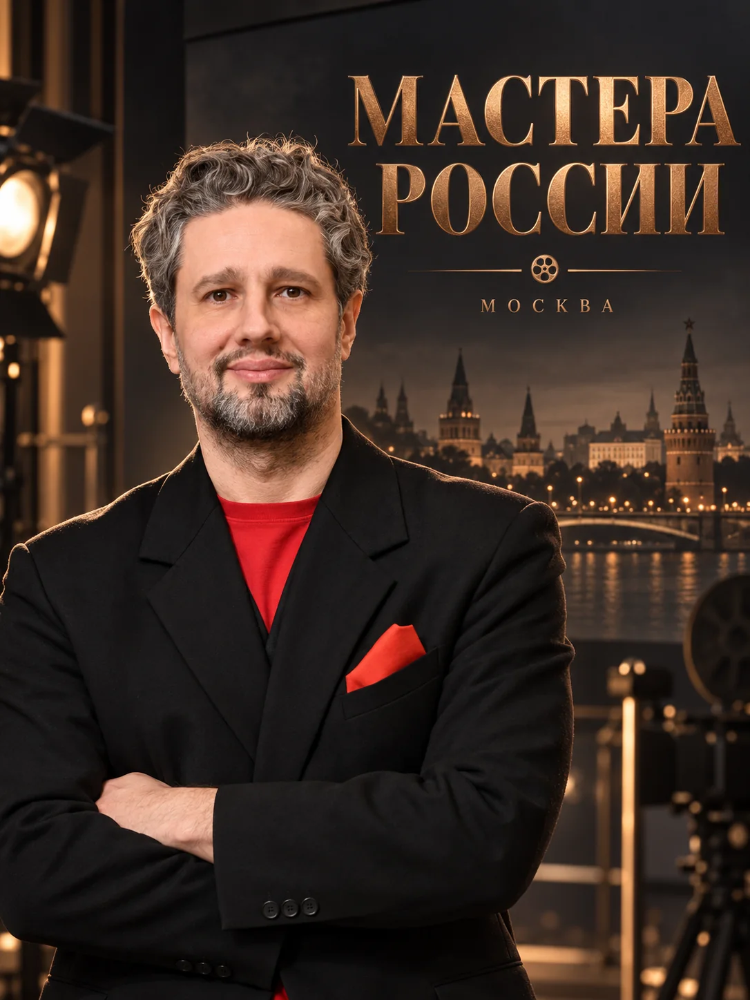
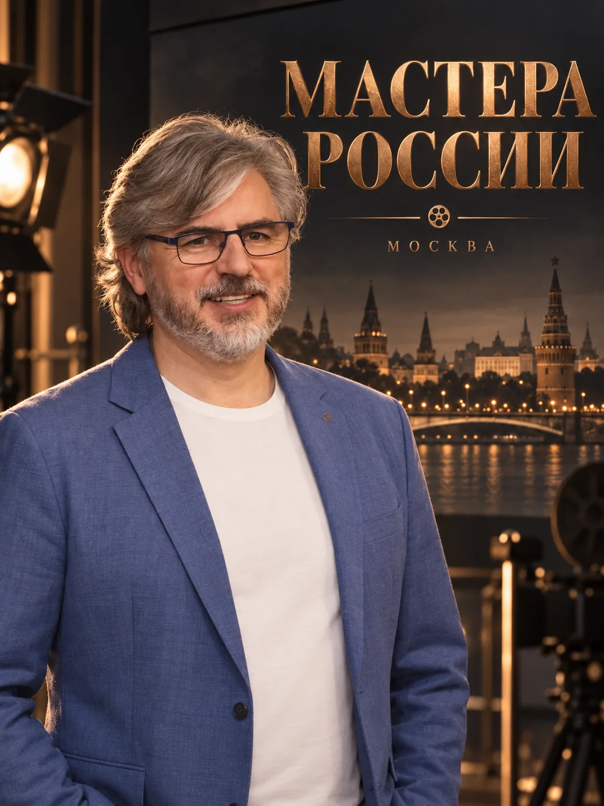
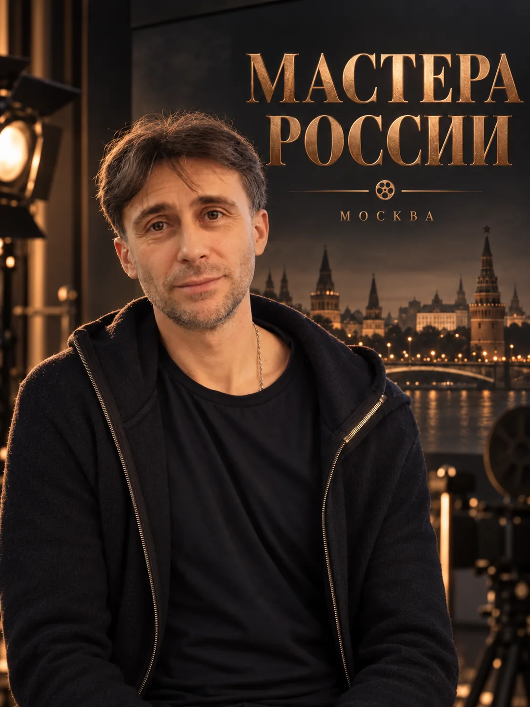

01
Команды. Кооперация
Как люди с разными профессиями и возможностями формируют доверие, собираются в команду и создают общее дело.
Истории людей, команд, предпринимательских объединений и семей, создающих настоящее и формирующих будущее России.
Каждая история раскрывает истоки дела, реальный результат сегодняшнего дня и видение самих героев: какой они хотят видеть Россию через 10, 20 и 50 лет — и что делают для этого уже сейчас.
В центре — доверие, совместное действие, опыт и люди, превращающие замысел в результат.

От доверия между людьми — к большим делам, партнёрствам и преемственности поколений.
Как люди с разными профессиями и возможностями формируют доверие, собираются в команду и создают общее дело.
Как команды, предприятия, наука, технологии и управленческие компетенции объединяются вокруг задач нового масштаба.
Как предпринимательские семьи передают знания, репутацию, предприятия, ценности и ответственность следующему поколению.
Предварительный формат: 6 или 12 серий в сезоне, хронометраж одной серии — 26 минут.
На главной — роль каждого участника в новом проекте. По нажатию открывается профессиональный опыт там, где собраны подтверждающие материалы.

Инициатива, стратегия, формирование партнёрств и взаимодействие с предпринимателями и героями проекта.
Профессиональный опыт ↗
Режиссёрская концепция, экранный язык, драматургия тизера и участие в сценарной разработке.
Профессиональный опыт ↗
Производственная и творческая организация; взаимодействие со специалистами и образовательной средой МГИК.
Профессиональный опыт ↗Сценарная архитектура сезона, работа с историями героев и исследовательским материалом.
Биография дополняется«Архитектор Света». Архитектор, преподаватель, идеолог.
Биография дополняетсяПартнёрские коммуникации, международные деловые проекты и взаимодействие с профессиональными сообществами.
Биография дополняетсяПриглашаем предпринимателей, компании и партнёров к разговору о создании «Мастеров России» — проекте о реальных людях, их делах и видении будущего.
Возможные форматы сотрудничества и участия обсуждаются лично. Первым шагом станет знакомство с проектом, командой и творческой концепцией.
Виталий Ротань
Идеолог и организатор проекта «Мастера России»